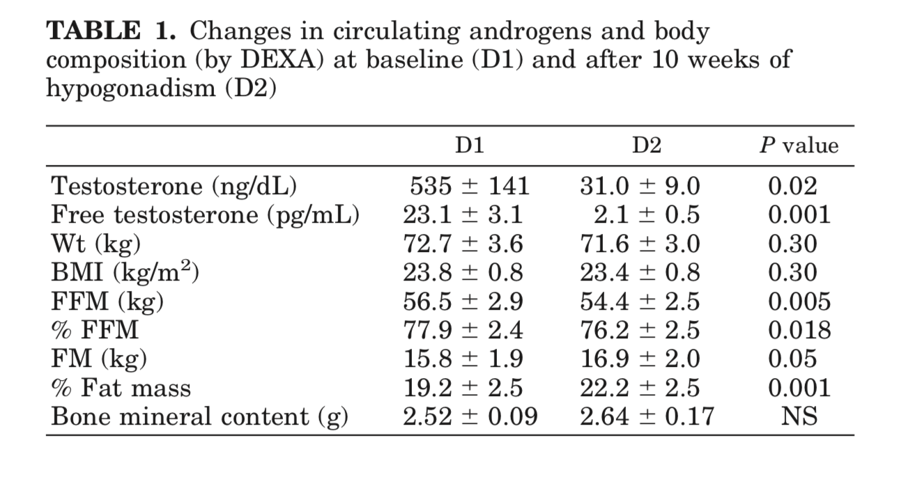
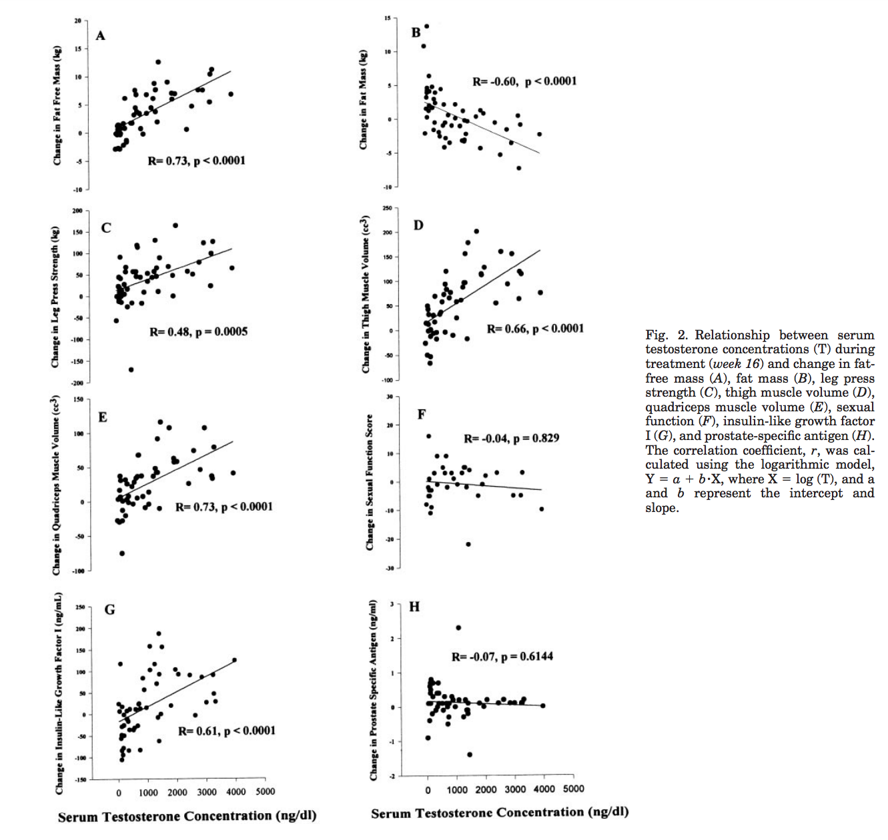

The Relationship Between the Endocrine System and Muscle Mass
By Lain | First published August 12, 2019 | Last modified October 5, 2020
Introduction
As someone who has recently undergone dramatic physiological changes prior to gender-affirming hormone therapy (GAHT) and who recently began taking antiandrogens and estradiol I was extremely interested in the effects of GAHT on muscle mass. Looking through traditional trans resources and talking to various general providers and transcare specialists I largely received anecdote related to “you’ll lose muscle mass” when suppressing androgens and/or taking estradiol. I thought and hope others will find the digging I’ve done to try and collate research on this useful or interesting as well.
Background
A bit of basic background on muscles:
- There are generally speaking two types of skeletal muscle fiber: type 1 (slow twitch) and type 2 (fast twitch).
- Muscle cells called myocytes are filled with myofibrils – protein chains that contract, have large stores of glycogen as well as oxygen.
- Muscular hypertrophy is the growth of muscle mass.
- Most muscle mass building is via anaerobic (non-oxygenated) exercise.
Lots of further reading can be found via Wikipedia on muscle tissue, skeletal muscle, muscular hypertrophy, and strength training.
Impact of the Endocrine System on Muscle Mass
While I initially sought out to find the effects of estrogens on muscle mass I was largely at a loss. I could find little information until I had a moment of clarity and realized that while estrogens do have interactions with the formation of muscle mass and muscle cells – the seemingly more important hormones are androgens and that is the presence or absence of testosterone that seems to have a far greater impact on muscle mass than the presence of estrogen. Something I would of course love to see would be studies similar to ones I look at below but with estrogens added in addition to androgens suppressed.
Summary
Testosterone from heavily androgen suppressed levels to above normal doses in assigned male at birth (AMAB) individuals seems to have a linear relationship to muscle mass. This seems to occur while maintaining the pre-existing distribution of both major skeletal muscle types (type I and type II). Further this seems to occur by an increase in the number of muscle cells (myonuclear number) as well as significant changes to their cellular structure – they add more myofibrils. This seems to be due to testosterone induced protein synthesis and prevention of protein degradation.
Below I have included a number of papers I found interesting and drew these conclusions from, with takeaways, quotes I found interesting as well as graphs.
Bhasin et al. (1996) - The Effects of Supraphysiologic Doses of Testosterone on Muscle Size and Strength in Normal Men
The main takeaway from this paper is to illustrate that even in AMAB individuals without suppressed androgens – increasing testosterone is useful in increasing muscle mass – as measured by looking at fat free mass (FFM) and also a concordant decrease in body fat (BF) percentage.
Our results show that supraphysiologic doses of testosterone, especially when combined with strength training, increase fat-free mass, muscle size, and strength in normal men when potentially confounding variables, such as nutritional intake and exercise stimulus, are standardized. The combination of strength training and testosterone produced greater increases in muscle size and strength than were achieved with either intervention alone. The combined regimen of testosterone and exercise led to an increase of 6.1 kg in fat-free mass over the course of 10 weeks; this increase entirely accounted for the changes in body weight.
Mauras et al. (1998) - Testosterone Deficiency in Young Men: Marked Alterations in Whole Body Protein Kinetics, Strength, and Adiposity
This paper was the first that I found that really illustrated that suppression of testosterone down to levels that people on an antiandrogen often seek. You can see that fat free mass (bone and muscle mass) decreases while body fat percentage increased.

Young men treated with a GnRHa were less efficient in their oxidation of fat, with a consequent decrease in the resting energy expenditure, which probably explains the increase in adiposity and the decrease in lean body mass observed during these experiments. The mechanisms for these findings are not completely understood; however, several considerations apply.
In summary, severe androgen deficiency in young men was associated with decreased lean body mass and increased adiposity, decreased lipid oxidation and energy expenditure rates, decreased rates of whole body protein synthesis, and decreased leg muscle strength. These findings were not associated with changes in circulating amino acid concentrations. These changes were associated with decreased gene expression for IGF-I in muscle, but no peripheral decreases in GH and IGF-I production. We conclude that androgens can directly affect systemic protein synthesis, independent of the effect of peripheral GH and IGF-I. The latter may be important when an anabolic effect is the desired effect in the treatment of both elderly and young men.
Bhasin et al. (2001) - Testosterone Dose-Response Relationships in Healthy Young Men
Possibly one of the most interesting papers I found. Not only did they suppress AMAB individuals testosterone with a gonadotropin-releasing hormone agonist they then gave different groups varying levels of it so that you could actually plot a dose response curve. They measured a number of things outside of fat free mass such as leg press strength, fat mass, thigh muscle volume, etc..

[…] 61 eugonadal men, 18–35 yr, were randomized to one of five groups to receive monthly injections of a long-acting gonadotropin-releasing hormone (GnRH) agonist, to suppress endogenous testosterone secretion, and weekly injections of 25, 50, 125, 300, or 600 mg of testosterone enanthate for 20 wk. Energy and protein intakes were standardized. The administration of the GnRH agonist plus graded doses of testosterone resulted in mean nadir testosterone concentrations of 253, 306, 542, 1,345, and 2,370 ng/dl at the 25-, 50-, 125-, 300-, and 600-mg doses, respectively. Fat-free mass increased dose dependently in men receiving 125, 300, or 600 mg of testosterone weekly (change 13.4, 5.2, and 7.9 kg, respectively). The changes in fat-free mass were highly dependent on testosterone dose (P = 0.0001) and correlated with log testosterone concentrations (r = 0.73, P = 0.0001). Changes in leg press strength, leg power, thigh and quadriceps muscle volumes, hemoglobin, and IGF-I were positively correlated with testosterone concentrations, whereas changes in fat mass and plasma high-density lipoprotein (HDL) cholesterol were negatively correlated.
Sinha-Hikim et al. (2002) - Testosterone-Induced Increase in Muscle Size in Healthy, Young Men is Associated with Muscle Fiber Hypertrophy
While the previous papers looked at the relationship between muscle mass and other factors and testosterone – this paper looks at how that occurs. They again supress testosterone and then give different groups varying levels of it – only this time they take muscle biopsies and look at how the actual muscle groups differ.
In healthy, young men, in whom testicular testosterone production had been suppressed by a GnRH agonist, administration of graded doses of testosterone was associated with dose dependent changes in circulating concentrations of total and free testosterone (7).
Data presented in this manuscript demonstrate that testosterone-induced gains in muscle size were associated with a significant increase in muscle fiber cross-sectional area. The cross-sectional areas of both type I and type II fibers increased in proportion to testosterone concentrations. The relative proportion of type I and II fibers did not change significantly. We therefore conclude that testosterone increases skeletal muscle size primarily by inducing muscle fiber hypertrophy.
In our study, the myonuclear number increased in direct relation to the increase in muscle fiber diameter. Therefore, it is possible that muscle fiber hypertrophy and increase in myonuclear number were preceded by testosterone induced increase in satellite cell number and their fusion with muscle fibers.
Bhasin et al. (2003) - The Mechanisms of Androgen Effects on Body Composition: Mesenchymal Pluripotent Cell as the Target of Androgen Action
A paper by the same research group as previous, this paper does a great job summarizing the effects of testosterone on muscle mass and its role in muscular hypertrophy. I’ve included here their table of its effects relevant to muscle mass.
The change in percent satellite cell number correlated with changes in total and free testosterone concentrations (10). Satellite cell and mitochondrial areas were significantly higher and the nuclear to cytoplasmic ratio lower after treatment with 300 mg and 600 mg doses (10). These data demonstrate that testosterone-induced muscle fiber hypertrophy is associated with an increase in satellite cell number, a proportionate increase in myonuclear number, and changes in satellite cell ultrastructure. These alterations in satellite cell number and ultrastructure and muscle morphology cannot be explained by the muscle protein synthesis hypothesis.
Testosterone has been reported to inhibit lipid uptake and lipoprotein lipase activity in adipocytes, and stimulate lipolysis (21), in part by increasing the number of lipolytic beta-adrenergic receptors.
Table 1. Summary of the Observed Effects of Testosterone on Body Composition
- Effects on Fat-Free Compartment
- Increase in fat-free and lean body mass (2–14)
- Increase in bone mass (52)
- Increase in nitrogen retention in castrated male mammals, eunuchoidal men, women, and prepubertal boys (25–28)
- Changes in Muscle Histomorphology
- Increase in cross-sectional areas of both types I and II skeletal muscle fibers (9)
- Increase in the number of myonuclei (10)
- Increase in the number of satellite cells (10)
- Changes in Protein Dynamics
- Increase in nonoxidative leucine disappearance rate (14)
- Increase in fractional synthesis rates of mixed skeletal muscle protein (11–14)
- No net increase in protein balance, although net protein balance becomes less negative in fasting state (15,16)
- Decrease in protein degradation by the arteriovenous difference method (15)
- Decrease in proteasome-mediated protein degradation (15)
- Effects of Fat Compartment
- Decrease in whole-body fat mass in hypogonadal men treated with replacement doses of testosterone (3–6)
- Decrease in whole-body fat mass in eugonadal men with supraphysiological doses of testosterone and other androgens (7)
- Decrease in intra-abdominal fat mass in middle-aged men with low normal testosterone levels (25,26)
- Increased lipolysis (26)
- Regulation of lipoprotein lipase activity (52,53)
- Decreased triglyceride assimilation in abdominal fat compartment (26)
- Inhibits preadipocyte to adipocyte differentiation (52)
- Note: Numbers in parentheses are reference numbers.
References
- Bhasin, S., Storer, T. W., Berman, N., Callegari, C., Clevenger, B., Phillips, J., Bunnell, T. J., Tricker, R., Shirazi, A., & Casaburi, R. (1996). The Effects of Supraphysiologic Doses of Testosterone on Muscle Size and Strength in Normal Men. New England Journal of Medicine, 335(1), 1–7. [DOI:10.1056/nejm199607043350101]
- Bhasin, S., Woodhouse, L., Casaburi, R., Singh, A. B., Bhasin, D., Berman, N., Chen, X., Yarasheski, K. E., Magliano, L., Dzekov, C., Dzekov, J., Bross, R., Phillips, J., Sinha-Hikim, I., Shen, R., & Storer, T. W. (2001). Testosterone dose-response relationships in healthy young men. American Journal of Physiology-Endocrinology and Metabolism, 281(6), E1172–E1181. [DOI:10.1152/ajpendo.2001.281.6.e1172]
- Bhasin, S., Taylor, W. E., Singh, R., Artaza, J., Sinha-Hikim, I., Jasuja, R., Choi, H., & Gonzalez-Cadavid, N. F. (2003). The Mechanisms of Androgen Effects on Body Composition: Mesenchymal Pluripotent Cell as the Target of Androgen Action. The Journals of Gerontology Series A: Biological Sciences and Medical Sciences, 58(12), M1103–M1110. [DOI:10.1093/gerona/58.12.m1103]
- Mauras, N., Hayes, V., Welch, S., Rini, A., Helgeson, K., Dokler, M., Veldhuis, J. D., & Urban, R. J. (1998). Testosterone Deficiency in Young Men: Marked Alterations in Whole Body Protein Kinetics, Strength, and Adiposity. The Journal of Clinical Endocrinology & Metabolism, 83(6), 1886–1892. [DOI:10.1210/jcem.83.6.4892]
- Sinha-Hikim, I., Artaza, J., Woodhouse, L., Gonzalez-Cadavid, N., Singh, A. B., Lee, M. I., Storer, T. W., Casaburi, R., Shen, R., & Bhasin, S. (2002). Testosterone-induced increase in muscle size in healthy young men is associated with muscle fiber hypertrophy. American Journal of Physiology-Endocrinology and Metabolism, 283(1), E154–E164. [DOI:10.1152/ajpendo.00502.2001]